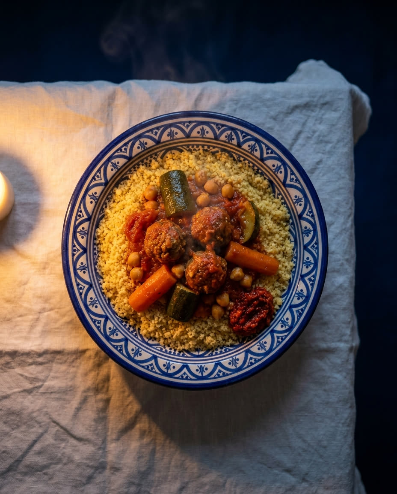
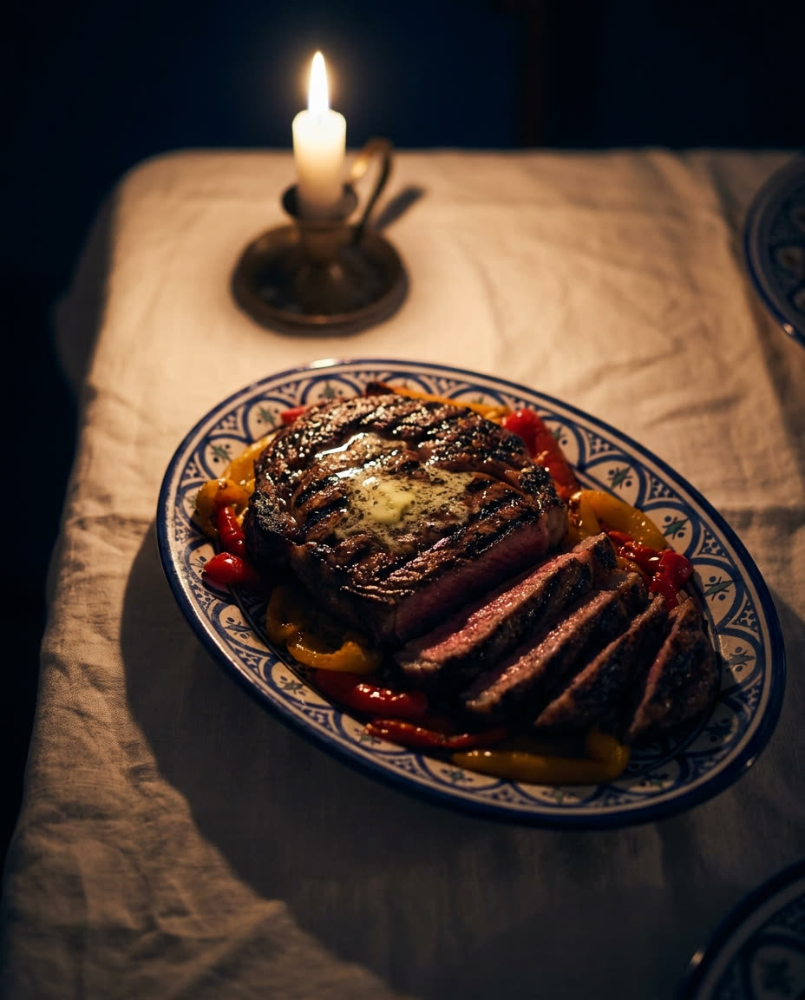
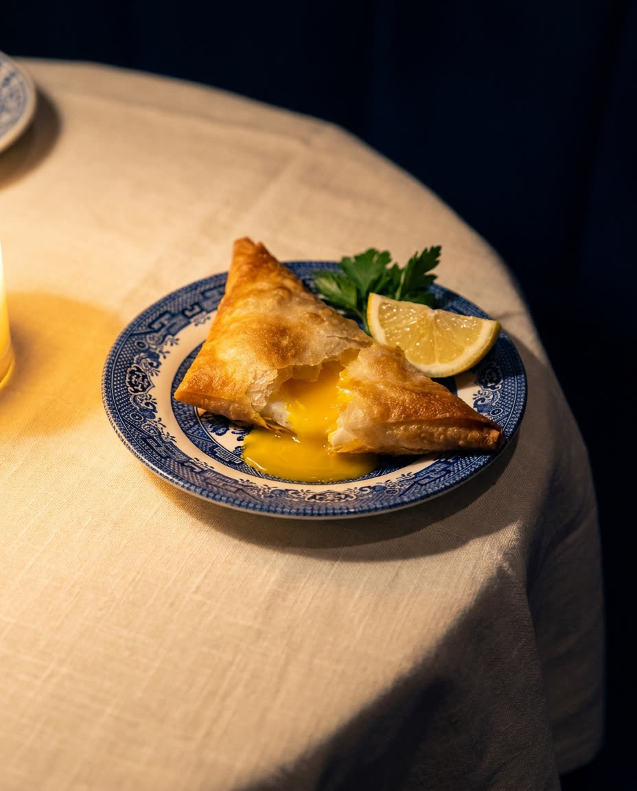
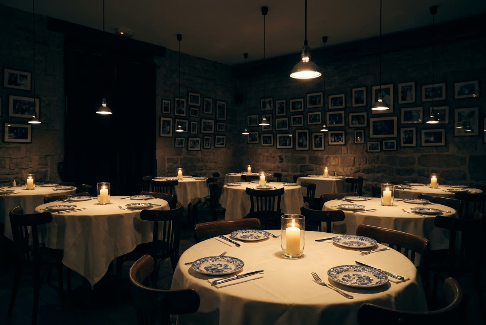

Paris 17e
La table tunisienne des Ternes
Rue Saussier-Leroy, la salle s'éclaire chaque midi et chaque soir. Nini est la maison tunisienne cachère historique du dix-septième.
Paris 17e
Rue Saussier-Leroy, la salle s'éclaire chaque midi et chaque soir. Nini est la maison tunisienne cachère historique du dix-septième.
Depuis des décennies, artistes et sportifs laissent un mot dans le livre d'or en sortant de table. Les habitués, eux, reviennent simplement.
À deux pas de la place des Ternes, du dimanche au vendredi midi. Le samedi, la maison est fermée.
La carte
Extraits. Aussi selon arrivage : côte de veau, tournedos, œufs de poisson frais. La carte complète et les tarifs sont en salle.



La maison tunisienne cachère historique du quartier des Ternes : une salle intime, des nappes ivoire, une cuisine qui n'a jamais changé de cap.
Sous le contrôle du Beth Din de Paris, Nini sert midi et soir la cuisine juive de Tunis, dans la même rue, à la même table.
